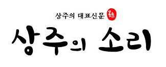

`
<footer class="cameron-container newclearfix" id="footer">

    <div  class="footer-log"></div> 
    
    <div class="footer-text" >     
        
         <div class="footer-nav">
             <ul >
                <li><a href="http://sangjusori.com/page_sqTV21">신문사소개</a></li>
                <li><a href="http://sangjusori.com/page_lEyT69">오시는 길</a></li>
                <li><a href="http://sangjusori.com/page_Tyeb80">정관</a></li>
                <li><a href="http://sangjusori.com/contact_YVYa71">기사제보</a></li>
                <li><a href="http://sangjusori.com/page_iHHN53">후원안내</a></li>
                <li><a href="http://sangjusori.com/page_lBDE47">개인정보취급방침</a></li>
                <li><a href="http://sangjusori.com/page_fkFA39">청소년보호정책</a></li>     
                <li><a href="http://sangjusori.com/page_eWXo24">이메일 무단수집 거부</a></li>                     
             </ul>             
         </div>


        주소 : 경북 상주시 경상대로 2749-10 | 전화 : 070-4187-0416 <br>
        인터넷신문사업 등록번호 : 경북,아00384 (2015년 8월 31일) | 발행인 : 유희순 | 편집인 : 이상훈 | 청소년보호책임자 : 박성배  <br>
        e-mail : sangjusori2@hanmail.net | <a href="https://www.facebook.com/%EC%83%81%EC%A3%BC%EC%9D%98%EC%86%8C%EB%A6%AC-825673764213059/timeline/" target ="_blank"><span style="background-color:#000080; color: white">facebook</span></a><br>
        <a href="http://sangjusori.co.kr/page_iHHN53" style="text-decoration-line: none"><span style="color: deepskyblue">후원계좌 : 농협 302-1007-2474-21 (예금주 : 상주의소리 박동준)</span></a>
    </div>
</footer>
